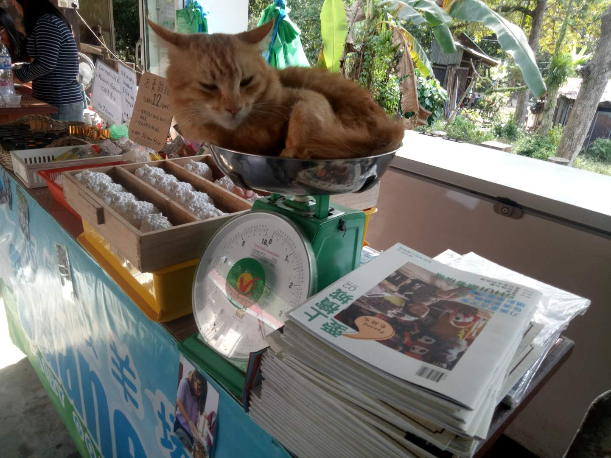
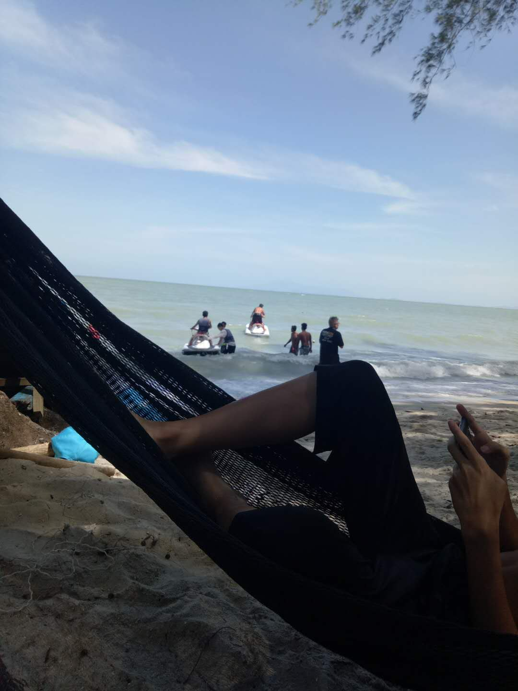

我喜欢这里
1:猴子沙滩
2：双峰塔

3：战争博物馆

4:壁画街
手抓蕉叶饭（Banana leaf rice）是典型的南印度食品。 手抓蕉叶饭一般将白米饭（或在一些传统南印度饭店裡使用速煮米）放在芭蕉叶上，再配有蔬菜、咖喱肉或咖喱鱼、印度式腌菜，有的还配有炸圆面包。传统的吃法是手抓。 使用芭蕉叶是为了使热饭能够散发至包装的芭蕉叶上，从而达到帮助消化的效果。
槟城，是马来西亚十三个联邦州之一，位于西马来西亚西北部，为了经济发展，1979年开始 兴建槟威大桥，1985年建成通车，全长8320米，是世界第三大桥
安东尼，马彤辉，马向雨，马骁，向东